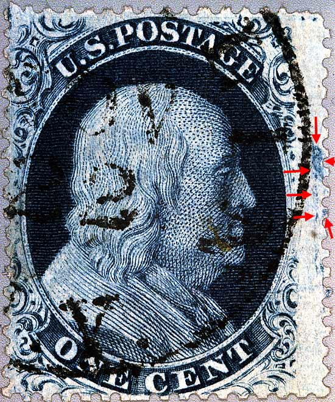
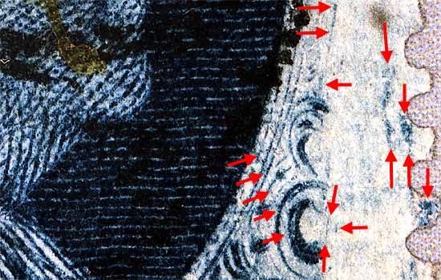
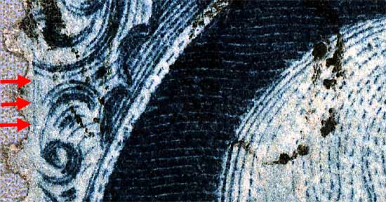
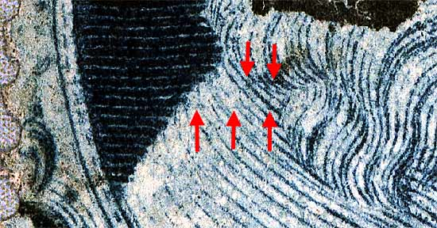
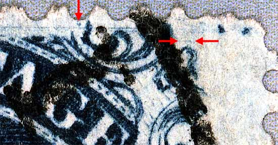
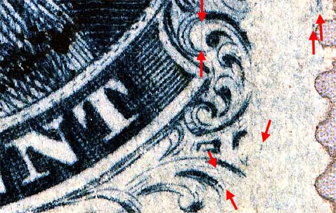

1¢ Franklin Issue of 1857-1861, PLATE 8 Pos 3L8, (Scott #24) |
| Scott #24 Blue, Type V, Relief A Issued only Perforate. Note: Guide dots at the top. |
|  |
| FIGURE 1. (Below) The near vertical scratch, east of the lips and shown on Neinken drawings. The other arrows point to marks and scratches not shown on the plating drawing but have been confirmed as constant.
 |
| FIGURE 2. (Below, red arrows) 2 faint vertical lines not shown on the plating drawings.
 |
| FIGURE 3. (Below) 2 Faint horizontal scratch marks not shown on plating drawings, but has been been verified by other students of this issue to be constant at this time.
 |
| FIGURE 4. (Below) Faint horizontal scratch mark and dot not shown on plating drawings. These have been verified by other students of this issue.
 |
| FIGURE 5. (Below) 2 vertical scratch marks not shown on plating drawings. These have been verified by other students of this issue.
 |
DISCLAIMER and COPYRIGHT INFORMATION: Thanks for visiting this site. I hope you learn something new as we are making new discoveries all the time. You, the visitor, have my permission to link to my pages and to share the INFORMATION with others. The images themselves fall under the fair use guidelines established by the United States Congress and Copyright law. Basically contact us before using. I also ask in return that you send me an e-mail if I have made a mistake, or have made some other technical blunder that in my rush to put these pages up would cause the visitor confusion. Please also visit my other website at www.slingshotvenus.com. and support the live music arts. While your there, be sure to purchase our music. There are not many philatelic rock stars around and we need all the help we can get. :-) I can be reached at: nerdman@ix.netcom.com Update 11/1/06 |